Historia
El Sistema Operativo Mac OS no fue la primera interfaz gráfica, pero fue la primera con gran éxito por su accesibilidad de precio. Para aquellos años en el mercado lo que existía era la Xerox Alto que costaba 32,000 dólares, la Xerox Star que costó 16,600 dólares y la Apple Lisa con un precio de 10,000 dólares. En cambio el primer sistema que incluía el sistema operativo de macOS fue el sistema 1 que venía incluido en el primer macintosh y costaba 2,500 dólares.
Division
La familia Mac OS Classic, basada en el codigo propio de Apple Computer y MAc OS X que fue desarrollado a partir de Mac OS Classic y neXTSTEP el cual estaba basado en UNIX
Versiones
System 1
El primer Mac (Macquintosh Original) trajo consigo un sistema operativo revolucionario en el mundo. Fue el primer ordenador que tenía ratón para hacer clic en los elementos y moverlos por el escritorio. Además, incorporaba apps creativas para poder pintar y dibujar, aunque, recuerda: en 1984 solo había pantallas en blanco y negro. En System 1 ya existía la barra de menús y el Finder, elementos que, increiblemente, se siguen conservando tal cual 38 años después.
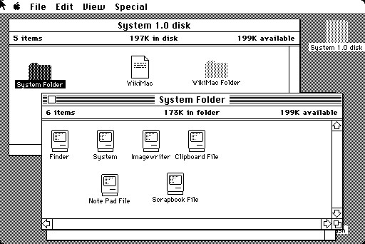Mac OS 8
En el que pasaron de System 7 a MacOS 8. Tenía soporte para pantallas a color y una de sus novedades es que se podían aplicar diferentes temas para ajustar la interfaz gráfica al gusto de los usuarios.

Mac OS 9
Mac OS 9 fue un sistema operativo de transición, fue necesario para continuar la historia del Mac, ya que Apple estaba imaginando la revolucionaria versión 10. De esta forma el usuario se adaptaría mejor a todos los cambios que iban a llegar. Por eso, no traía novedades destacables. La más sorprendente fue la posibilidad de grabar CDs desde el propio Finder.
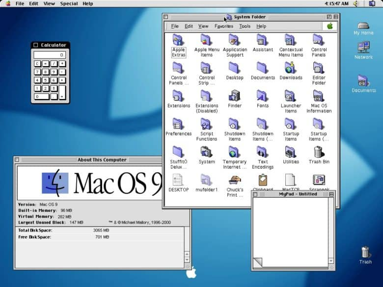Mac OS X "Cheetah" (2001)
Se incluyeron los botones de control en la esquina superior izquierda de las aplicaciones, y el Dock, que a partir de entonces es el lugar desde donde se organizan y lanzan las aplicaciones.
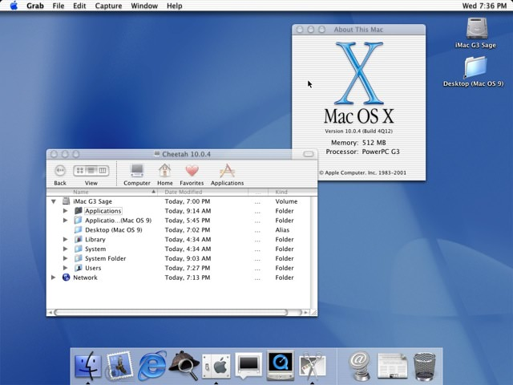Mac OS X 10.1 / Mac OS X 10.2 / Mac OS X 10.3 (2001-2003)
Estas versiones introdujeron mejoras en el rendimiento, cambios en el diseño y en la interfaz de usuario. Se incluye la posibilidad de reproducir DVD y la grabación de CD. También se incorpora el cambio rápido de usuarios, que permite pasar de una sesión a otra rápidamente. En 2003 Safari pasó a ser el navegador predeterminado para Mac OS X.
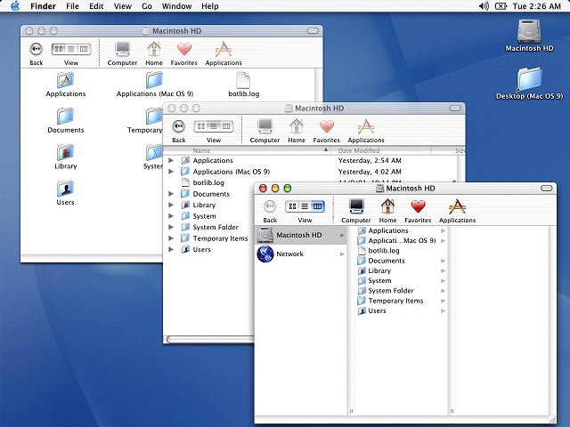Mac OS X 10.4 "Tiger" (2005)
Se introdujo el sistema Spotlight para buscar cualquier tipo de contenido, y el Dashboard con widgets para acceder rápidamente a cierta información.
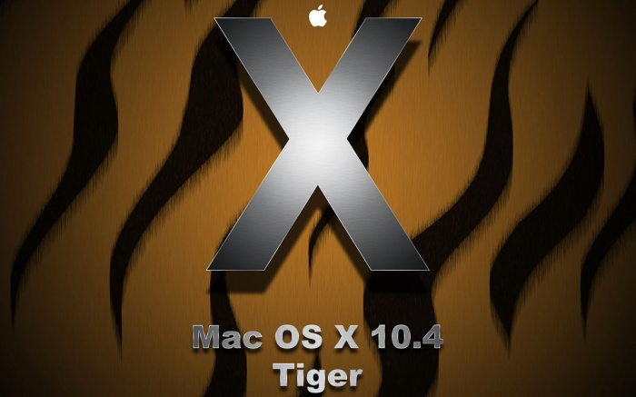Mac OS X 10.5 “Leopard” (2006)
Es la primera versión compatible con la tecnología de Intel. Algunas de las características introducidas son Time Machine (para copias de seguridad), Mail 3 (programa de correo electrónico de Apple, que ahora incluye Notas), o un rediseño del Dock.

Mac OS X 10.6 “Snow Leopard” (2008)
Es considerada una de las mejores versiones del sistema operativo de Apple. Supuso un gran salto en velocidad, estabilidad y rendimiento.
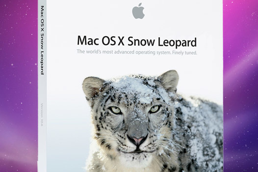Mac OS X 10.8 “Mountain Lion” (2012)
Algunas de sus novedades son una mayor integración con iCloud, Recordatorios y Notas como aplicaciones independientes, y la sustitución de iChat por iMessages.
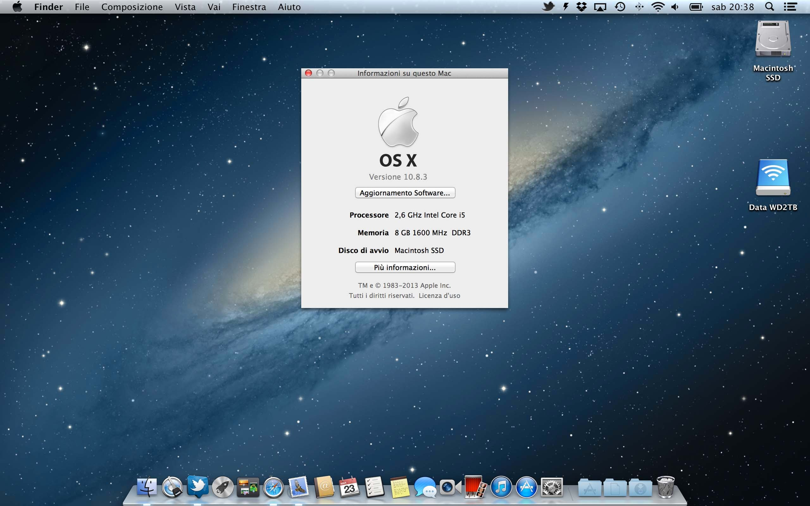Mac OS X 10.9 / Mac OS X 10.10 / Mac OS X 10.11 (2013-2014-2015)
Con estas versiones Apple abandona los nombres de grandes felinos, y sus nombres a partir de entonces serán de lugares de California. Con “Yosemite” se produce un cambio hacia un diseño más plano, y en “El Capitán” se incluye la opción Split View, que permite dividir la pantalla y usar dos aplicaciones simultáneamente.
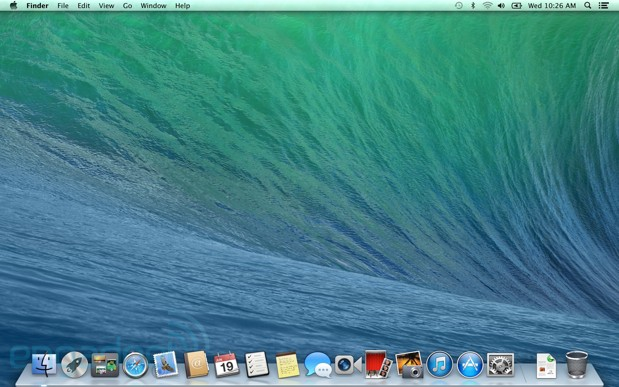macOS 10.12 “Sierra” (2016)
A partir de esta versión ya no se incluirá la X en su nombre, y se escribirá macOS. Siri, el asistente inteligente de Apple, se lanza en versión escritorio para los Mac. También apareció la opción de portapapeles de un dispositivo a otro. Permitía copiar un enlace o imagen en el móvil y pegarlo en el ordenador, o viceversa. Se incluye también desde esta versión la posibilidad de pagar con Apple Pay desde la web.
.jpg)
macOS 10.13 “High Sierra” (2017)
Aparte de otras novedades, se centró en introducir mejoras en Siri, y en aplicaciones como Safari, Mail, iCloud, Notas, Spotlight o FaceTime.
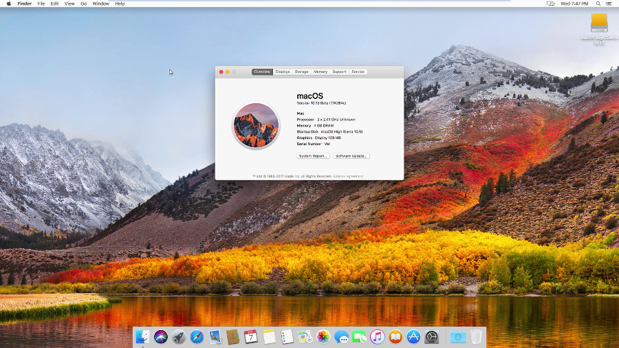macOS 10.14 “Mojave” (2018)
Algunas de las nuevas características son un modo oscuro para muchas de las aplicaciones del sistema, fondos de pantalla dinámicos que cambian en función del momento del día, la aplicación de notas de voz, o una Mac App Store completamente rediseñada.
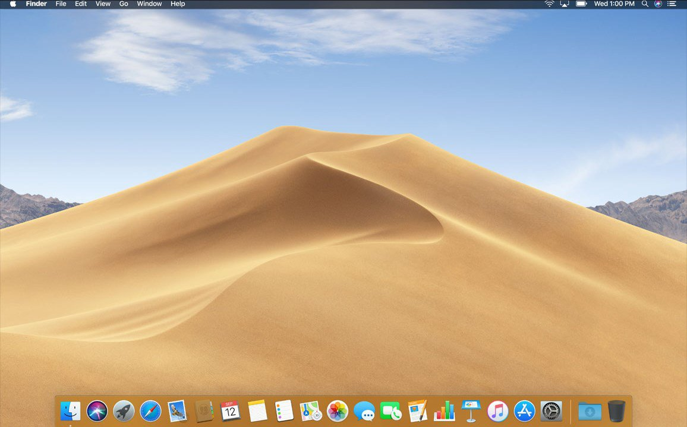macOS 10.15 “Catalina” (2019)
En esta versión la aplicación iTunes se divide en tres: Música, Podcast y Apple TV. Así mismo, llega el Proyecto Catalyst, que permitirá portar las aplicaciones de iPadOS a macOS de una manera mucho más sencilla. Otra función que se estrena es Sidecar, que hace posible utilizar un iPad como segunda pantalla externa de tu Mac. Se podrá disfrutar de Apple Arcade y de su catálogo de juegos también en los Mac.
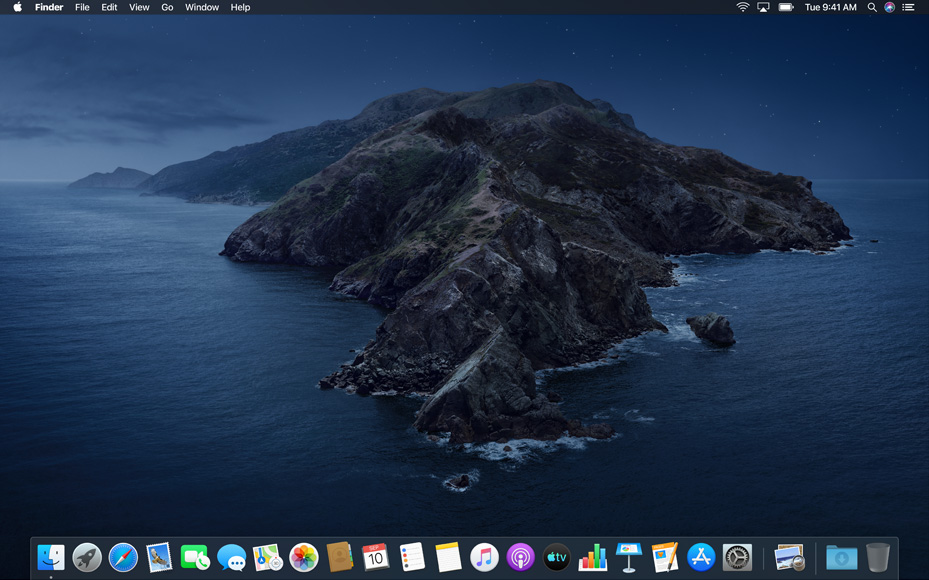macOS 11 Big Sur (2020)
Es la última versión que se ha lanzado del sistema operativo de Apple por ahora. Se caracteriza sobre todo por un gran rediseño. La intención de Apple es unificar el lenguaje de diseño de todos sus sistemas operativos.
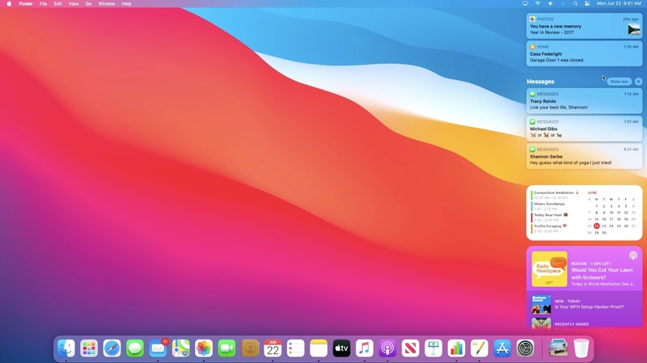